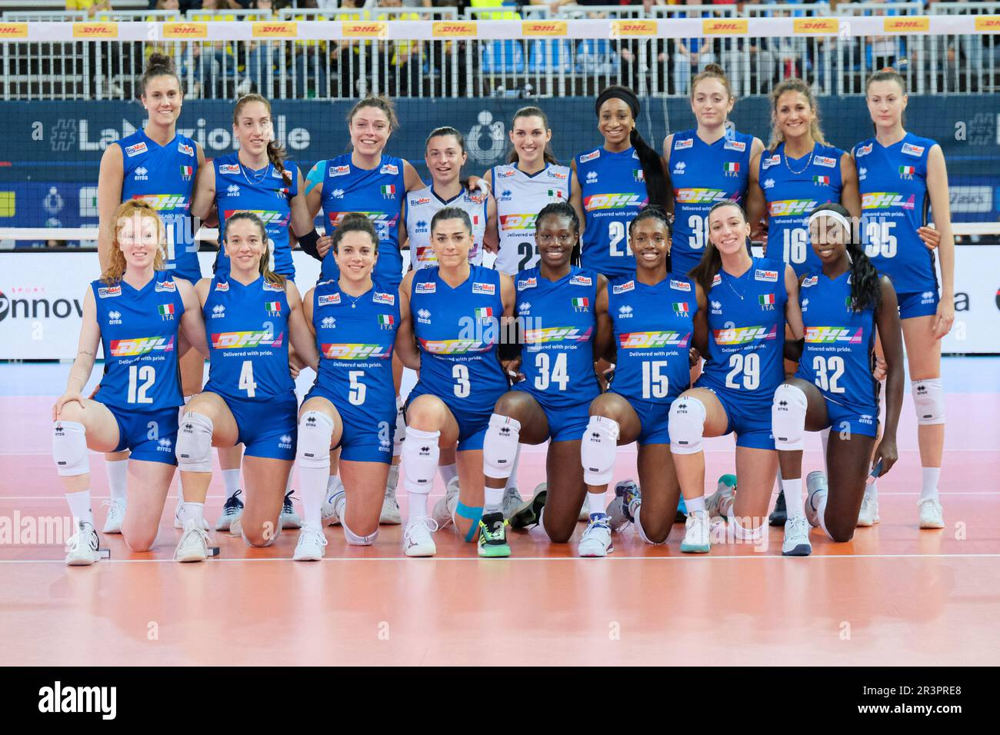
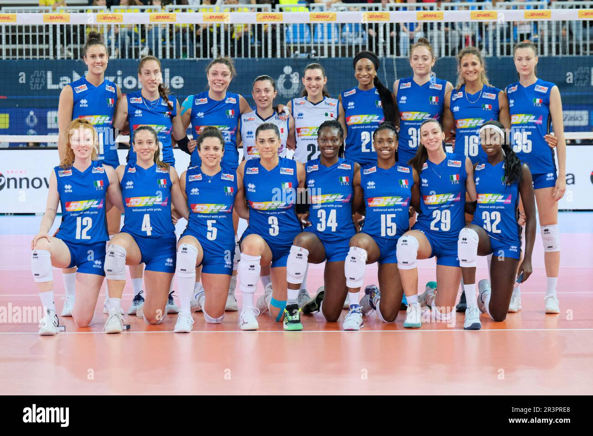

Ciao👋benvenuti nel mio sito oggi vi parlerò della... PALLAVOLO!!😍💕
Nel campo ci sono 6 posti: posto 1 dove si batte e difende, posto 2 e 4 dove sta l'attacante, posto 3 dove c'è la palleggiatrice e posto 5 e 6 dove si difende.
Le giocatrici della nazionale femminile di pallovolo dell'Italia sono:
Palleggiatrici: Carlotta Cambi, Francesca Bosio, Alessia Orro, Giulia Gennari.
Schiacciatrici: Alice Degradi, Caterina Bosetti, Elena Pietrini, Stella Nervini, Myriam Sylla, Rebecca Piva, Loveth Omoruyi, Martina Bracchi, Gaia Giovannini.
La capitana di questa squadra è Anna Danesi.
 

Questa squadra ha vinto le olimpiadi del 2024.
L'allenatore della nazionale femminile di pallavolo dell'Italia è Julio Velasco.
Nato da padre peruviano e da madre argentina di origine inglesi, cresce assieme ai due fratelli, uno maggiore di un anno e l'altro minore di cinque. Il padre, che aveva lasciato il Perù per studiare all'Università Nazionale di La Plata,dove lavorava nella radio studentesca, si separa dalla madre e muore nel suo Paese natale per una pancreatite curata male quando Julio aveva 6 anni.
I primi contatti di Velasco con la pallavolo avvengono ai tempi del liceo e dell'università, quando gioca e allena selezioni giovanili, ma la sua carriera vera e propria inizia nel Ferro Carril Oeste di Buenos Aires, dove vince quattro campionati argentini consecutivi tra il 1979 e il 1982.